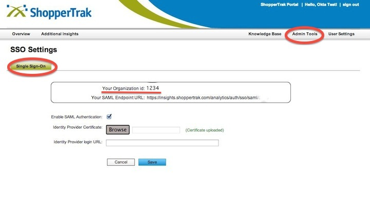

This setup might fail without parameter values that are customized for your organization. Please use the Okta Administrator Dashboard to add an application and view the values that are specific for your organization.
Sign in to your ShopperTrak Account and click on Admin Tools > Sign Sign On. 
Login URL/SignOn URL: Sign into the Okta Admin dashboard to generate this value.
Download and upload the following Certificate in the Identity Provider Certificate field: Sign into the Okta Admin dashboard to generate this value.
In Okta ShopperTrak App Configuration Settings, enter the ShopperTrak Organization ID provided to you. See the screenshot above to see the location of the Organization ID in ShopperTrak.